Banco Finandina por el riel 4 · flujo de punta a punta
Corrida del 18 de noviembre de 2026 · ambiente local · navegador (Chromium sin ventana) · solicitud 468423
Resultado: cerró en estado 11 «Autorizada» con Banco Finandina.
- Autogestión en la sucursal «Finandina Pruebas»; cliente empleado con 2,5 MM de ingreso y score 700; pidió 5 MM.
- La política de CRED-519 lo puso en el perfil Riesgo Y · Empleado y aprobó los 5 MM.
- Al autorizar se descontó el cupo mensual del perfil: de 30 MM a 35 MM usados.
- Se ofrecieron las 4 fechas de pago de Finandina y sólo los plazos que caben en la capacidad (12 a 36 cuotas; el de 6 no).
- La pantalla final no muestra «Paga tu cuota»: la cobranza es de Finandina (caso 14 de la guía de Abel).
Cómo quedó la solicitud en la base
| Campo | Valor |
|---|---|
| Estado | 11 «Autorizada» |
| Entidad | Banco Finandina (149), tipo 4 |
| Monto aprobado | $5.000.000 (el monto con el FGA e IVA es $5.450.000) |
| Plazo | 12 cuotas |
| Primera fecha de pago | 20 de diciembre de 2026 |
| Desembolso marcado | 18-11-2026 14:17 |
| Perfil y cupo mensual | Riesgo Y · Empleado · 30.000.000 → 35.000.000 |
Pantalla por pantalla
Cada captura se toma al llegar a la pantalla, antes de llenarla. Debajo, el estado de la solicitud en la base en ese momento.
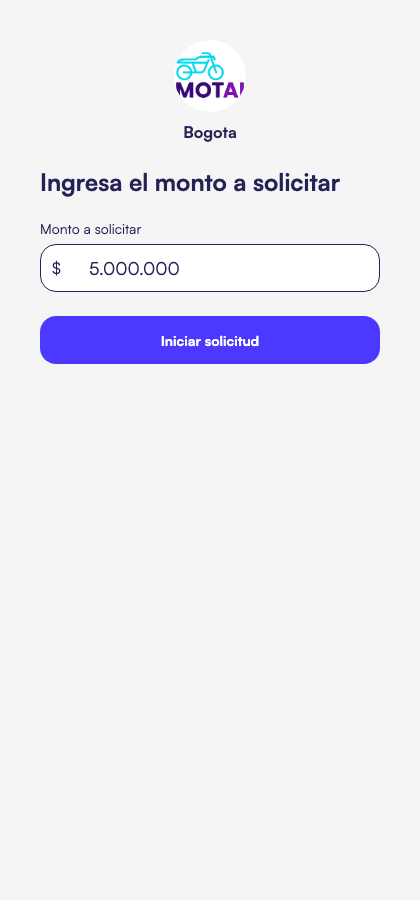
sin solicitud todavía
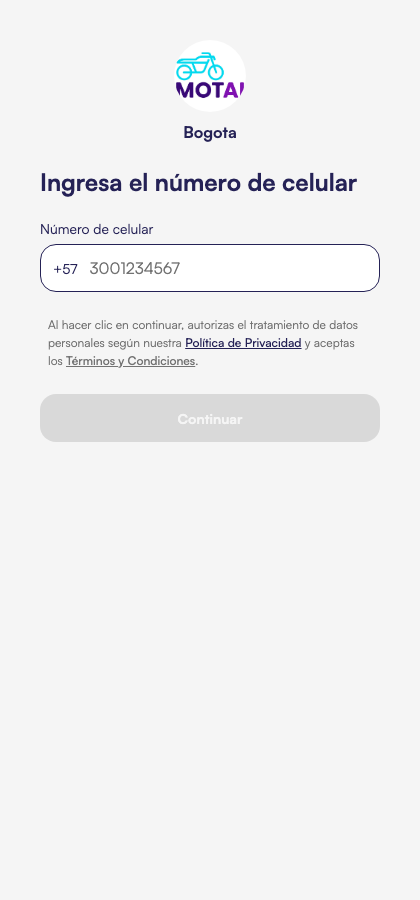
sin solicitud todavía
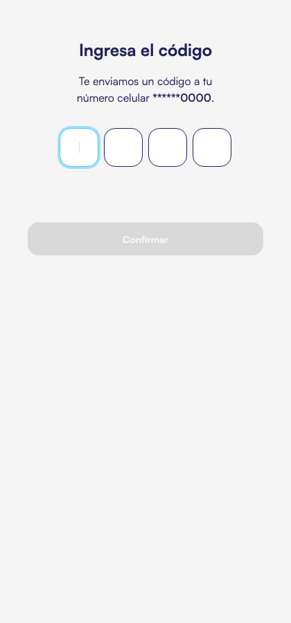
sin solicitud todavía
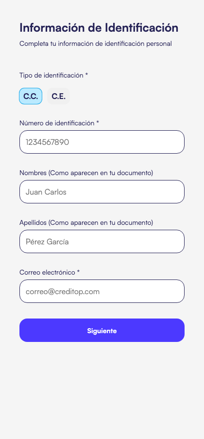
9 «Formulario de perfil»
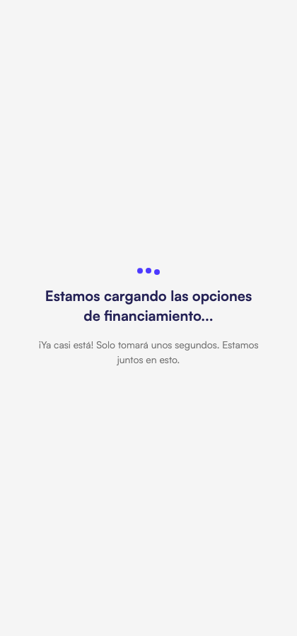
9 «Formulario de perfil»
9 → 3 «Seleccionó entidad»
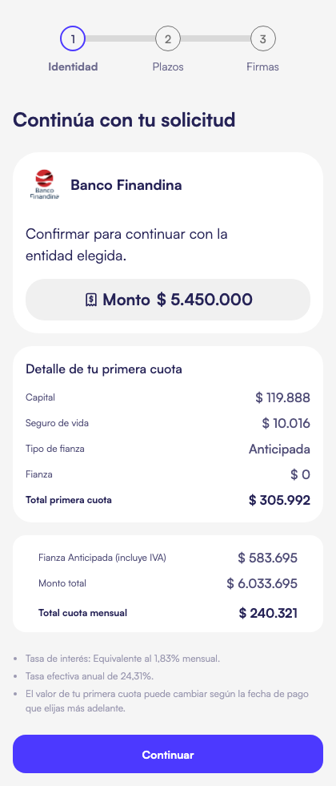
3 «Seleccionó entidad»
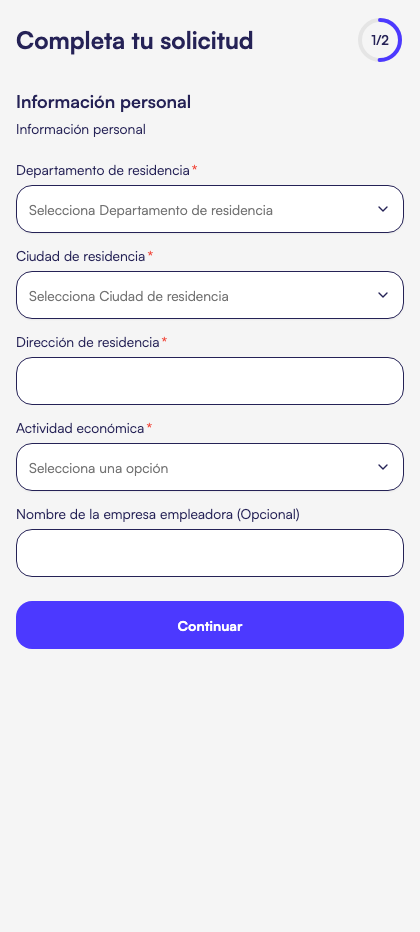
3 «Seleccionó entidad»
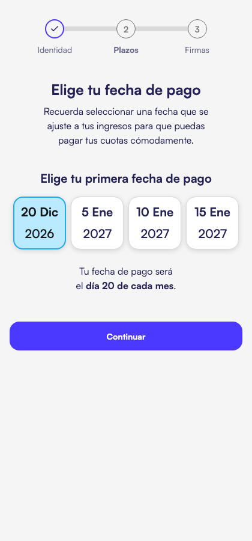
3 → 10 «Pendiente de autorización»
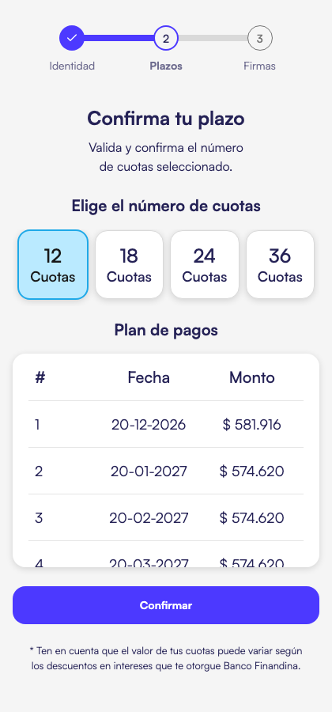
10 «Pendiente de autorización»
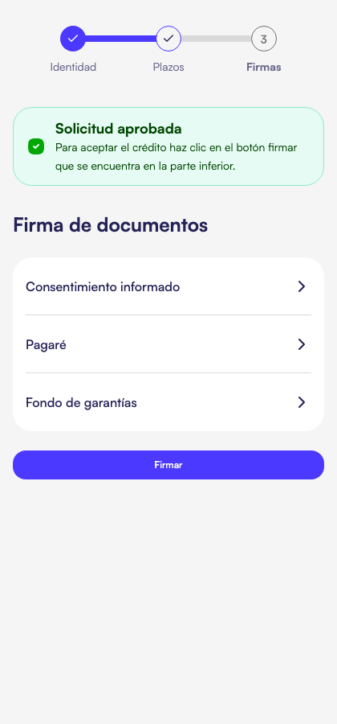
10 «Pendiente de autorización»
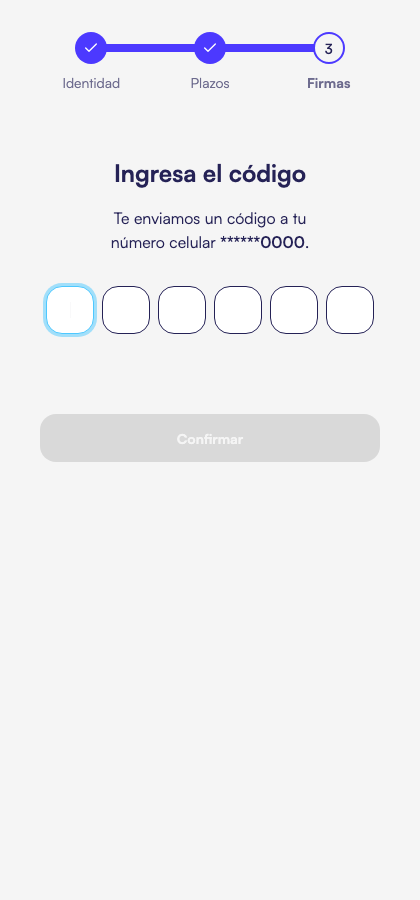
10 «Pendiente de autorización»
10 → 11 «Autorizada»
Qué no cubre esta corrida
- Es local: qa está caído desde el 18-11 (la columna
collect_expedition_dateborrada por CORE-562). El mismo flujo cerró en qa el 17-11 (solicitudes 505101 y 505114). - Centrales y documentos simulados: Ágil Data, Mareigua y Experian los contesta el mock local; la identidad se aprobó a mano y los PDF salen del mock del generador.
- Pagaré: en local va el digital por el mock de Deceval; en qa quedó el pagaré sin Deceval hasta que llegue la credencial de Finandina (CRED-463).
- Los rechazos (zona, edad, cédula de extranjería, independiente, score, capacidad y tope de la entidad) se probaron en qa el 17-11: están en la pila de la tarea.